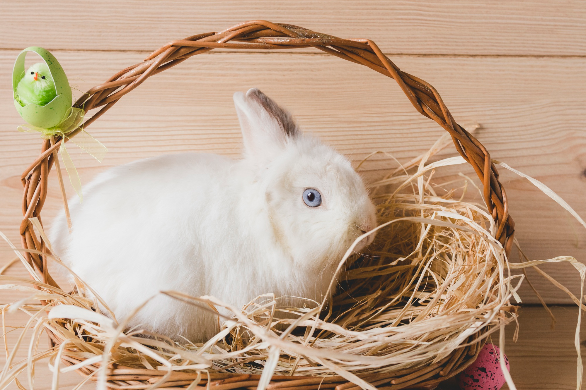

#}
{# #}
#}
{# #}
'جوندگان'
غذای جوندگان
آیا جوندگان حیوانات خانگی خوبی هستند؟
گاهی به جوندگان "حیوان خانگی جیبی" نیز گفته می شود که حیوانات خانگی بسیار محبوبی هستند. خرگوش ، همستر، موش و خوکچه هندی از رایج ترین جوندگانی هستند که به عنوان حیوان خانگی نگهداری می شوند. آنها برای خردسالان گزینه خوبی هستند ،ضمن اینکه به نسبت ، نیاز به مراقبت زیادی ندارند.
داشتن موش خانگی خوب است؟
موش ها نگهداری کمی نیاز دارند ، مقرون به صرفه هستند و به ندرت بیمار می شوند. موش ها به طرز شگفت آوری تمیز هستند و می توان آنها را آموزش داد.
در اینجا 10 حقیقت جالب در مورد موش ها وجود دارد که شما را شگفت زده خواهد کرد!
1- موش ها حافظه خوبی دارند 2- موش ها حیوانات اجتماعی هستند 3- موش ها بسیار مشکوک هستند 4- موش ها بسیار تمیز هستند و واقعا از کثیف شدن متنفرند 5- موش ها کور رنگ هستند و بینایی ضعیفی دارند 6- موش ها کوهنوردان، جهنده ها و شناگران عالی هستند 7- موش ها دندان های تیز دارند 8- موش ها عملکرد دم باورنکردنی دارند 9- بیش از 60 گونه موش در جهان وجود دارد 10- موش ها بی وقفه تولید مثل می کنند.
به جوندگان به عنوان حیوانات خانگی چه غذایی می دهید؟
به آنهابا تنوع غذا بدهید . موش ها همه چیزخوار هستند، بنابراین می توانید رژیم غذایی آنها را با مقادیر کمی میوه، سبزیجات، تخم مرغ پخته شده، غلات و دانه ها تکمیل کنید و از مصرف غذاهای مضر مانند پیاز، مرکبات، گردو، ریواس، انگور، کشمش و شکلات خودداری کنید و همچنین از مصرف قندها و غذاهای پرچرب مانند لبنیات خودداری کنید.
بهترین غذای خرگوش چیست؟
یونجه مهمترین بخش از مصرف روزانه خرگوش است. یونجه علف سرشار از فیبر است که برای حفظ سلامت دستگاه گوارش خرگوش بسیار مهم است.

Meet podcaters

Taylor

Modeling
Fashion

William
Creative
Design

Chan
Education